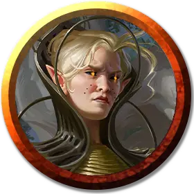

Принцесса Зедалли
Princess Xedalli
Средний Гуманоид (Волшебник), любое мировоззрение, именной НИП

Класс Доспеха 16 (эльфиская кольчуга)
Хиты 103 (23к8)
Скорость 30 футов
| мод | спас | ||
|---|---|---|---|
| СИЛ | 11 | +0 | +0 |
| ЛОВ | 14 | +2 | +2 |
| ТЕЛ | 10 | +0 | +0 |
| мод | спас | ||
|---|---|---|---|
| ИНТ | 21 | +5 | +8 |
| МДР | 18 | +4 | +7 |
| ХАР | 18 | +4 | +7 |
Навыки Магия +8, Обман +7, Проницательность +7, Убеждение +7
Чувства тёмное зрение 60 футов, пассивное Восприятие 14
Языки Общий, Драконий, Небесный, Эльфийский
Опасность 8 (3900 опыта)
Бонус мастерства +3
Особенности
Наследие фей. Зедалли с преимуществом совершает спасброски от состояния очарованный, и её невозможно магически усыпить.
Специальное снаряжение. Зедалли облачена в эльфийскую кольчугу [elven chain] и носит кольцо падающих звёзд [ring of shooting stars].
Необычная природа. Зедалли не нуждается во сне.
Отыгрыш Зедалли. Зедалли выглядит как рациональная и способная на компромисс альтернатива своему безжалостному злому брату-близнецу. Несмотря на это, она остаётся расчётливым манипулятором, который скорее умрёт, чем откажется от своих притязаний на императорский престол.
Зедалли понимает, что для восхождения на престол ей нужно набраться терпения. В ходе приключения принцесса имитирует сочувствие к персонажам и использует некоторые из своих способностей, чтобы помочь им в переделках. При этом она не раскрывает свою самую сильную магию (например, способность призвать солнечного дракона).
Если Зедалли узнает, что герои направляются в космос Рока, чтобы присоединиться к коалиции, она будет ждать благоприятного момента, надеясь, что союз станет достаточно сильным, чтобы оспорить притязания её брата на престол.
Действия
Мультиатака. Зедалли совершает две атаки Скимитаром и использует Поток излучения (если доступен).
Скимитар. . Рукопашная атака оружием: +5 к попаданию, досягаемость 5 фт., одна цель. Попадание: 5 (1к6 + 2) рубящего урона плюс 10 (3к6) урона излучением.
Поток излучения (3/день). Зедалли выпускает из руки магический поток излучения линией длиной 60 футов и шириной 5 футов. Каждое существо в этой линии должно преуспеть в спасброске Телосложения Сл 16, получая 18 (4к8) урона излучением при провале или половину этого урона при успехе.
Использование заклинаний. Базовой характеристикой эльфа является Интеллект. Он может накладывать следующие заклинания:
• 1/день каждое: полёт [fly], фальшивый двойник [mislead], послание [sending]
Бонусные действия
Звёздный шаг (3/день). Зедалли может бонусным действием телепортироваться на расстояние до 30 футов в свободное пространство, которое он может видеть, вместе со всем, что он несёт и носит.
Призыв солнечного дракона (1 раз в день). Зедалли может с 50% шансом магическим образом призвать молодого солнечного дракона [young Solar Dragon]. Призванный дракон появляется в свободном пространстве, которое может видеть призыватель. Он действует на своем значении инициативы и дружелюбен к его призывателю. Дракон присутствует в течение 10 минут, пока он, либо призыватель, не умрут, или пока призыватель не отпустит его действием.
Описание
Астральный эльф аристократ — это знатный выдающийся лидер, одаренный магическими способностями, в том числе способностью управлять солнечным светом и призывать солнечного дракона.
Астральные эльфы
Давным-давно некоторые эльфы отправились на Астральный план, чтобы стать ближе к своим богам. Там они перестали стареть и могли бесконечно долго существовать без пропитания.
Они стали одними из первых существ, заселивших Серебряную пустоту. Астральным эльфам пришлось столкнуться с жестокими соседями и странными гостями, когда другие исследователи достигли звезд. На протяжении веков астральные эльфы боролись с многочисленными захватчиками, включая псурлонов, свежевателей разума и гитъянки. Общаясь с другими расами, астральные эльфы обычно прячут свои лица под богато украшенными масками, становясь безликими продолжениями своих богов. Их безграничная преданность пантеону эльфийских богов была вознаграждена божественной силой. Например, боги наделили астральных эльфов воителей способностью наполнять энергией звёздного света своё оружие, а лидеров астральных эльфов — способностью накладывать заклинания и призывать солнечных драконов.
Астральные эльфы бороздят Астральное море и Дикий космос на кораблях собственной конструкции. Эти корабли создаются из кристаллов, собранных в системах Дикого космоса и скрепленных органическим материалом растительного происхождения, затвердевающим подобно керамике. Эльфы формируют из этой субстанции различные формы, создавая звёздных мотыльков (см. «Путеводитель астрального путешественника») и другие суда. Также эльфы видоизменяют окаменевшие тела мертвых богов, обнаруженные в Серебряной пустоте, превращая их в парящие города и цитадели.
Несмотря на то, что Серебряная пустота — дом эльфов, они часто отправляются в системы Дикого космоса и размещают свои корабли и цитадели на орбите вокруг звёзд. Для этого есть несколько причин. Соседство с звездой позволяет астральным эльфам заключать соглашения с солнечными драконами и собирать звездный свет, используемый эльфами для выращивания кристаллов и ремонта своих кораблей. Но что важнее, астральные эльфы используют время вне Глубокого Астрала, для пополнения своей численности, рожая и воспитывая детей.
Многим астральным эльфам тысячи, а в некоторых случаях десятки тысяч лет. Каким бы не был их нрав, долголетие даёт астральным эльфам уникальное чувство восприятия времени, которое мало кто из других видов существ может себе представить. Неважно, выбрали ли астральные эльфы жить в тихом созерцании или же отправились исследовать просторы Мультивселенной, они склонны смотреть на вещи сквозь призму того, что время для них почти не имеет значения.